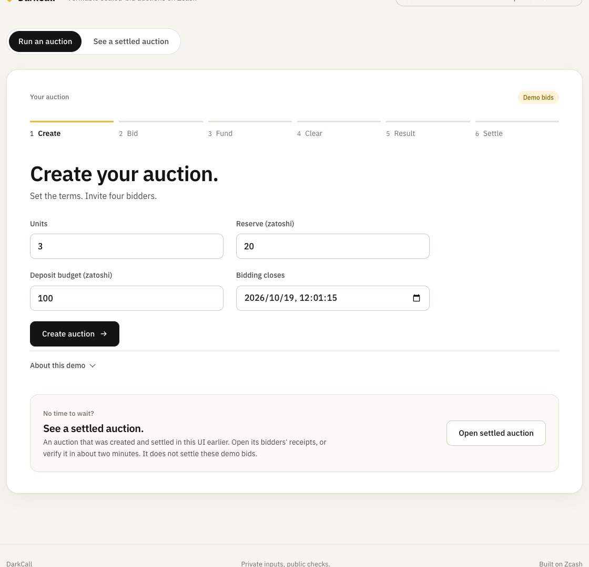
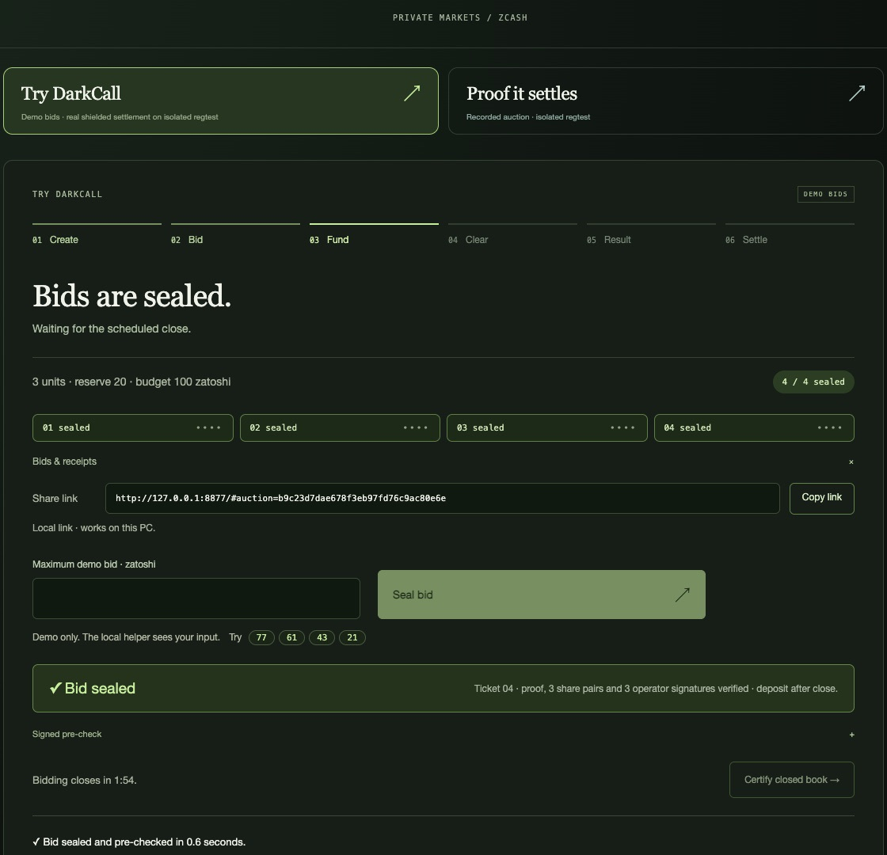
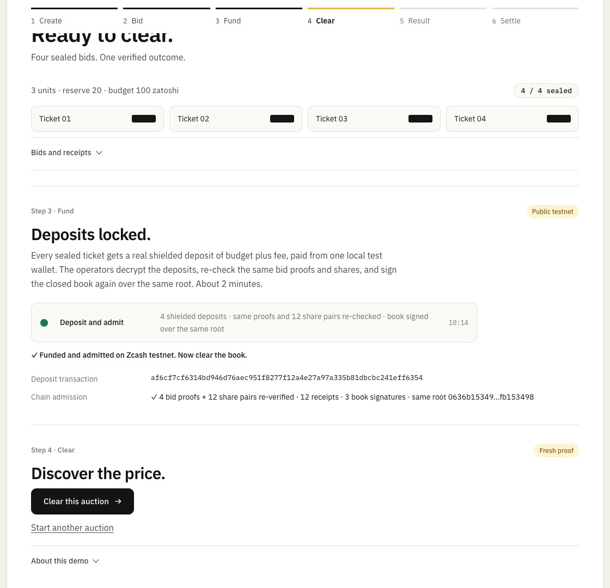
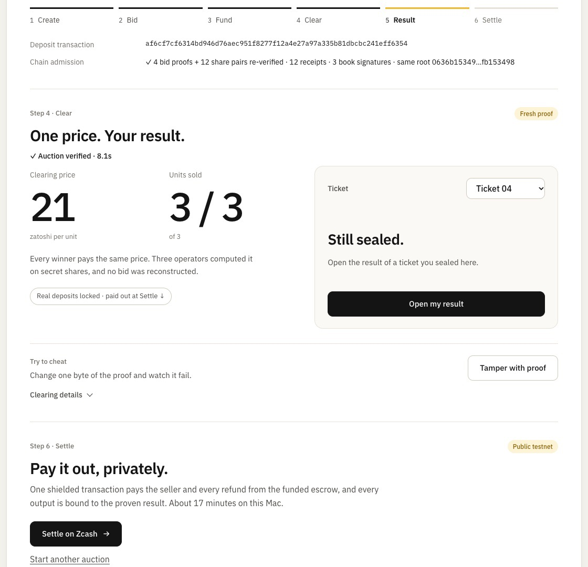
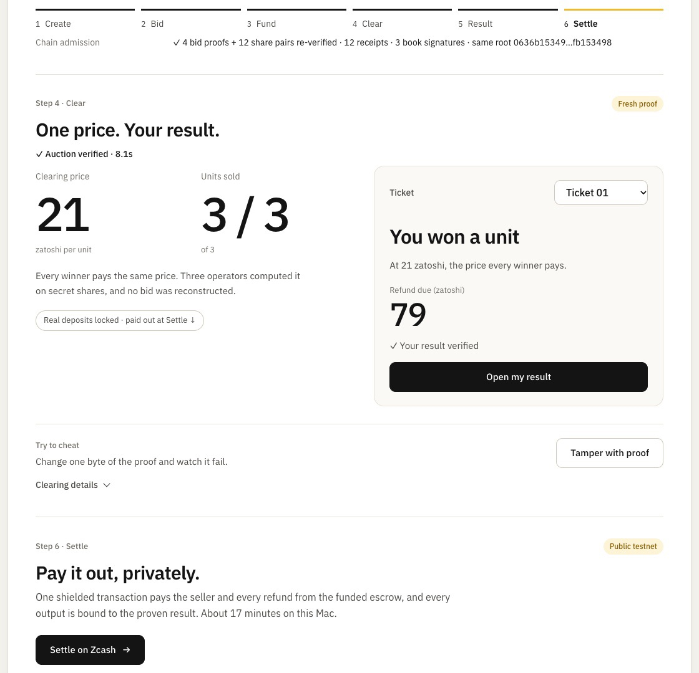
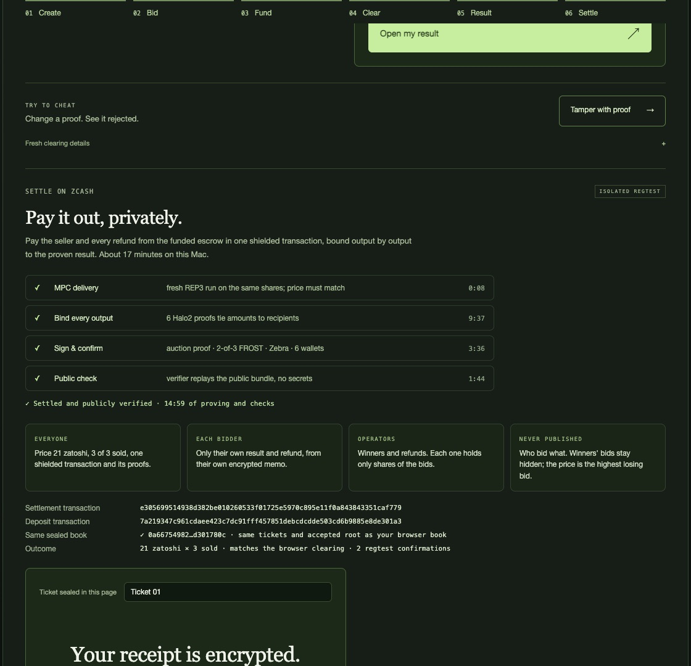
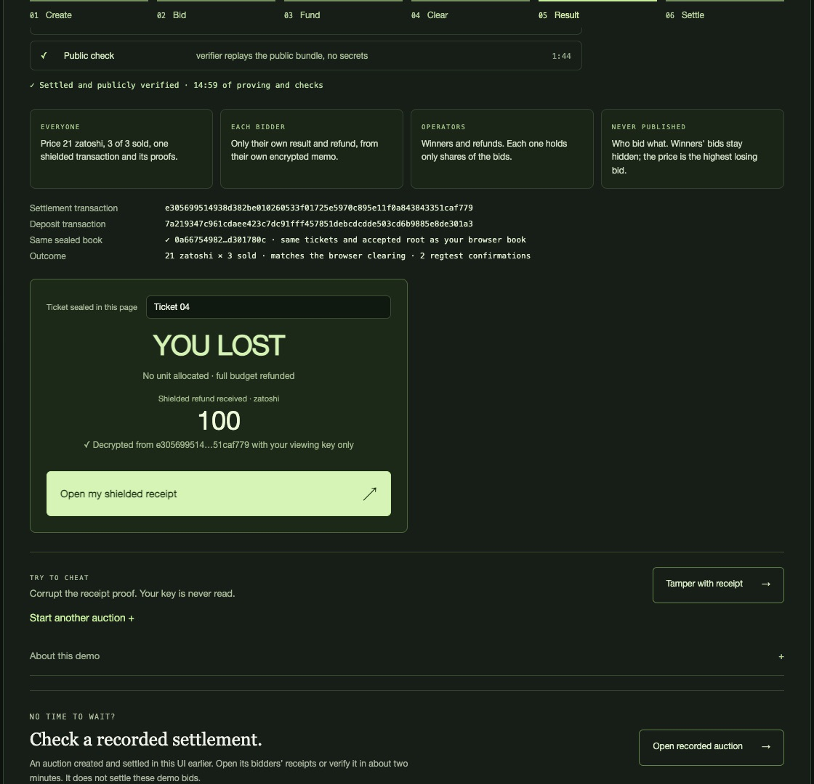
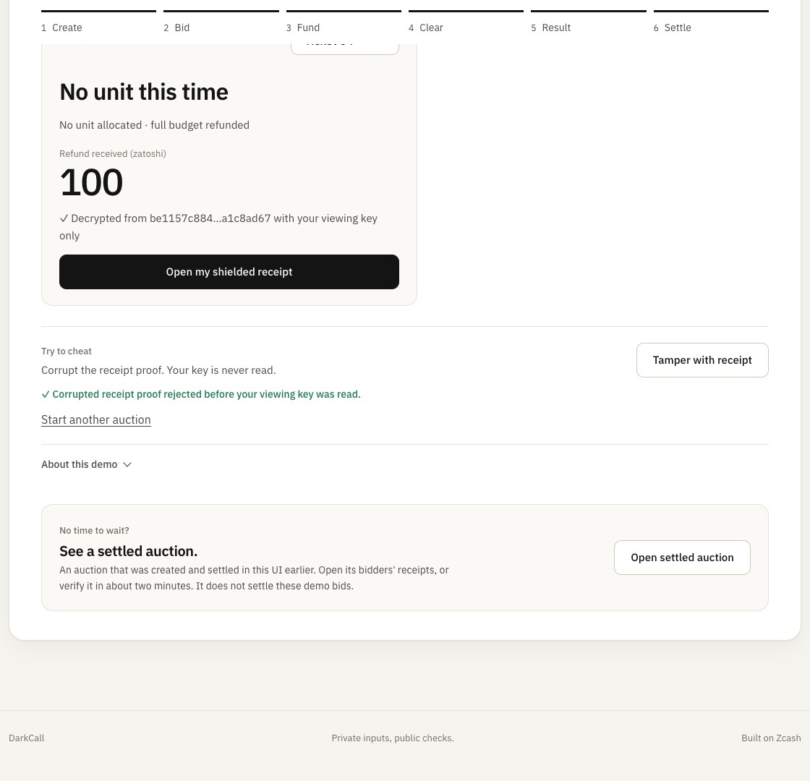

01
Create
The seller sets 3 identical units, reserve 20 and a deposit budget of 100 zatoshi. Bidding closes in two minutes.
t + 0:04Sealed-bid auctions on Zcash
Not at the close, and not for any single operator. The clearing price is computed on secret shares and proven in zero knowledge, and one shielded transaction pays the seller and refunds every bidder exactly as proven.
Demo scope, up front. The one public number is the clearing price, which by the auction rule equals the highest losing bid or the reserve. Every party runs on one machine, and the local helper that builds a bid's proof sees the typed demo bid. The chain is an isolated Zebra NU7 regtest, not testnet or mainnet. The protocol keeps bids from the operators and the public; this demo shows that machinery working, not isolation between separate parties.
119 s, edited from one real auction (b9c23d7dae…9ac80e6e). Every time cut states the real elapsed time, and every frame is SHA-256-checked against the capture manifest.
Commit–reveal and published viewing keys show every bid amount after the close. DarkCall proves the price without opening any, then pays out in shielded ZEC.
| DarkCall | Open on-chain auction | Commit–reveal or published viewing key | Trusted auctioneer or key committee | |
|---|---|---|---|---|
| Bids hidden from the public | Yes, never opened | No | Only until the close | Yes |
| Bids hidden from whoever runs it | Yes, from any single operator | No | No | No, it decrypts them |
| Anyone can check the price | Yes, by zero-knowledge proof | Yes | Yes, by opening every bid amount | No, you trust it |
| Payments and refunds stay private | Yes, one shielded transaction | No | Possible, if paid shielded | Possible, if it pays shielded |
| Payout provably follows the result | Yes, six output proofs | Yes, by contract | Yes, by contract | No, the signers decide |
Common designs compared, not specific projects. Timings from one 16 GiB laptop.
Captured in a headless browser driving the real UI, with no shortcuts. Total 19:44 from the first click to the tamper refusal.
b9c23d7dae678f3eb97fd76c9ac80e6e0a66754982…d301780c7a219347c961cdaee423c7dc91fff457851debcdcdde503cd6b9885e8de301a3e305699514938d382be010260533f01725e5970c895e11f0a843843351caf779
The seller sets 3 identical units, reserve 20 and a deposit budget of 100 zatoshi. Bidding closes in two minutes.
t + 0:04
Each bid becomes a commitment plus three REP3 secret shares, one per operator. A client zero-knowledge proof binds them, and the three operators check it and sign. The page shows no values.
t + 0:10
After the close, every ticket gets a real shielded deposit on an isolated NU7 regtest (tx 7a219347c9…8de301a3). The operators re-verify the same proofs and shares, then sign the book again over the same root. Took 2:04.
t + 4:10
The three operators compute on secret shares and jointly prove the result (coNoir), verified in 7.6 s. Price 21 zatoshi, 3 of 3 sold. No bid was reconstructed.
t + 4:19
Ticket 01 opens only its own verified outcome. No other ticket's result is shown.
t + 4:21
One shielded transaction pays the seller and refunds all four bidders (tx e305699514…51caf779). It has six Halo2 output bindings and 2-of-3 FROST signatures, Zebra accepted it with 2 confirmations, and a public verifier replayed it. Took 15:13.
t + 19:34Ticket 01 decrypts its own memo with its own viewing key: won, 79 zatoshi refunded.
t + 19:39
Ticket 04 decrypts its own memo: lost, the full 100 zatoshi refunded.
t + 19:43
Flipping one byte of the receipt proof makes the fixed verifier reject it before the viewing key is read.
t + 19:44The clearing price, the units sold, one shielded transaction and its proofs.
Only their own result and refund, from their own encrypted memo.
Winners and refunds. Each one holds only shares of the bids.
Who bid what, and every winner's maximum bid. The price is the highest losing bid, or the reserve.
No wallet key, bid, mask or witness is needed. The authority file is configured separately from each bundle.
scripts/docker_verify.sh # clean Linux container from committed source; about 20 min to build./verify.sh --funded demo/artifacts/browser-auction-nu7-v3 \
--authority demo/authority/browser-auction-nu7-v3.json| Bundle | Settlement tx | What it is | Verified |
|---|---|---|---|
browser-auction-nu7-v3 | e305699514…51caf779 | The auction in the video | host-verified 103 s; added after the container run |
browser-auction-nu7-v2 | e3ffa436a2…84769754 | six-step browser auction: funded before clearing, then settled, Oct 19 | clean Linux container, 100 s, tamper refused |
browser-auction-nu7-v1 | 3fee2c7ce3…b5c0b5d7 | auction created and settled by clicking through the browser UI, Oct 18 | clean Linux container, 100 s, tamper refused |
fresh-book-nu7-v1 | 54941ffd84…45c76ee6 | browser-created book settled from the CLI driver (resumed), Oct 18 | clean Linux container, 99 s, tamper refused |
canonical-nu7-funded-v1 | 47019e02e4…3a211938 | recorded Oct 5 settlement with fixture bids | clean Linux container, 100 s, tamper refused |
Container: clean Linux container built from git archive; Linux 6.10.14-linuxkit aarch64. Each check covers native authorization, six output bindings, the auction proof and the operator certificate, and requires a cryptographic rejection of a corrupted receipt proof.